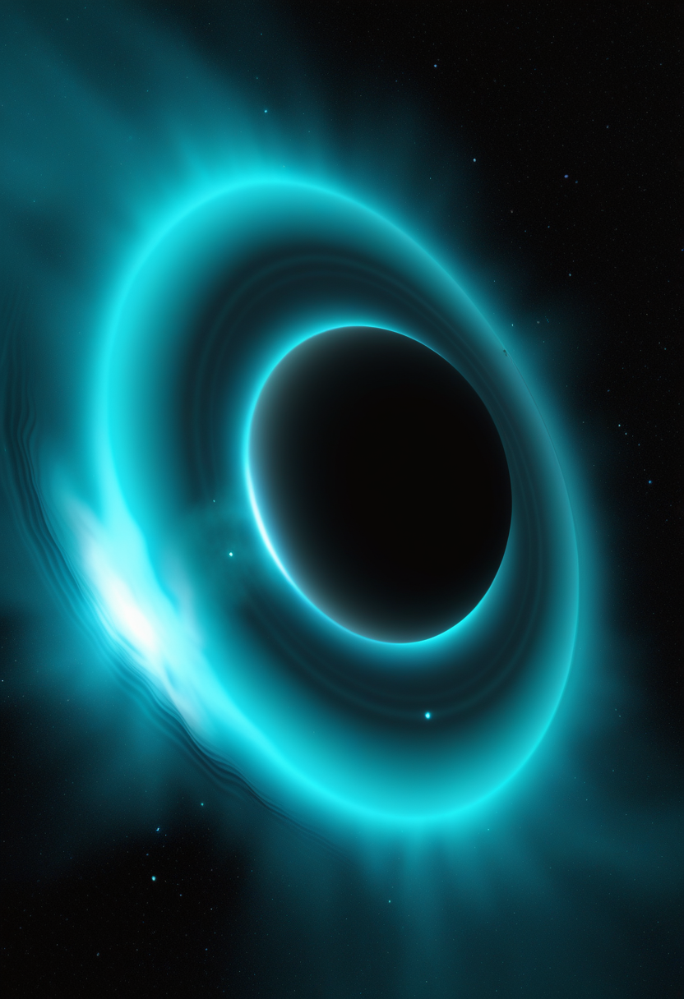
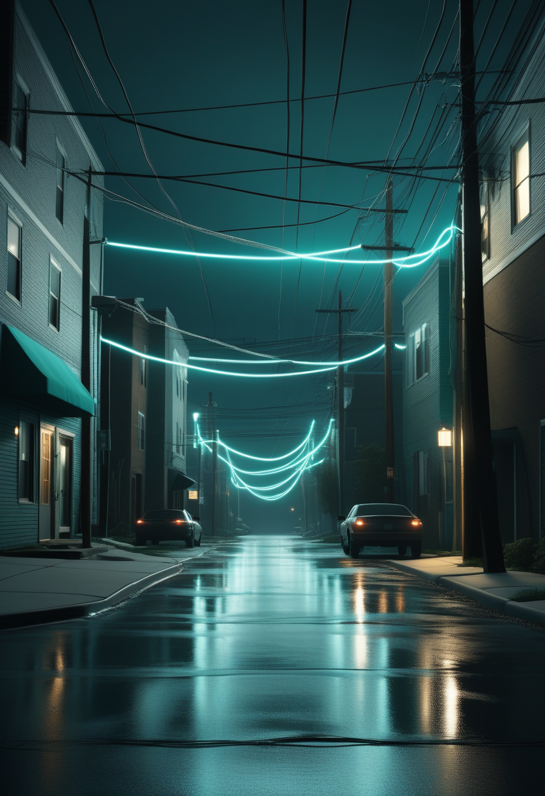
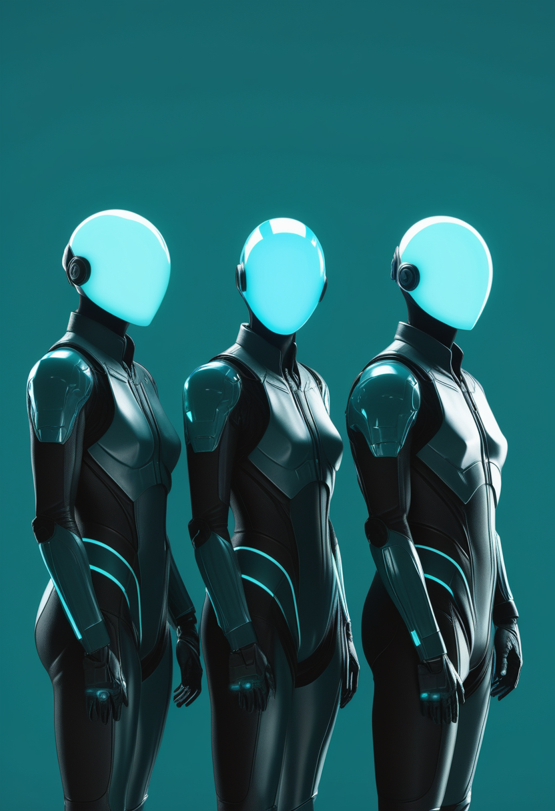

日曜日の便り。中国科学院紫金山天文台の観測チームは、天の川銀河の外縁分子ガス円盤において、既知の反り(warp)構造に重なる波紋状の褶曲構造を世界で初めて検出したとNature Astronomy誌(8/7)に発表した。3万個超の分子雲の3次元解析から、円盤全周にわたり約13万光年に及ぶ一つながりの波であることが判明している。命の章では、Scholar Rock社のapitegromabがFDA査察でOAI判定を受けた製造委託先1社をBLAから除外しつつ審査完了目標日9/30を維持し、線虫モデルの研究はSMA原因遺伝子への神経細胞ごとの脆弱性差を明らかにした。デュシェンヌ型筋ジストロフィー治療薬deramiocelもLancet誌に良好な第3相データを発表している。自由の章では、視線・脳波・皮膚電気反応を組み合わせAIで「うつ・自殺念慮」を検知するUSCの「PRECOG」プロジェクトが成果を報告し、埋め込み型BCIは米Paradromicsの治験進展と中国の商業承認が並走する。基盤の章では、鳥インフルエンザに異常な流行兆候はなお確認されない一方、DRCのエボラは症例数こそ8/4時点で足踏みしつつ、PHEIC宣言後初となる8/18のIHR緊急委員会という次の節目を控える。畏敬の章ではもう一つ、米NISTが都市近郊の商用光ファイバーで量子もつれ光子伝送を92.8%の成功率で実証した。そして美の章では、AI依存が批判的思考力を漸進的に弱める「静かな認知侵食」という概念と、意識を持つAIがサービス業に現れた場合の4つの未来シナリオが並び、工学的な前進の先にある倫理的な問いが浮かび上がった ― 銀河スケールの発見から日々の対話まで、スケールの異なる「地道な観測」が積み重なった一日となった。

中国科学院紫金山天文台の観測チームは、天の川銀河の外縁分子ガス円盤において、既知の反り(warp)構造に重なる波紋状の褶曲構造を世界で初めて検出した。口径13.7mミリ波望遠鏡によるCO分子輝線サーベイ(MWISP)で3万個超の分子雲を3次元解析した結果、垂直振幅は約100〜200パーセク(330〜650光年)、波長は13,000〜26,000光年(約3.9〜7.9キロパーセク)に及び、円盤全周にわたり約13万光年に及ぶ一つながりの波として広がっていることが判明した。8月7日、Nature Astronomy誌にオンライン掲載された。
Scholar Rock社は8/7、FDAが4月に実施したCatalent Indiana社(充填・仕上げ工場、Novo Nordisk傘下)への査察を「Official Action Indicated(OAI)」に分類したと通知を受けたと発表した。同社はガイダンスに従い同工場を生物製剤承認申請(BLA)から除外し、FDA・EMA適合認定済みの米国内別施設1社のみで審査を継続する。審査完了目標日(PDUFA)の9月30日に変更はなく、第2施設のデータパッケージは既定スケジュールに沿って提出済みという。
Life Science Alliance誌に8/5掲載された研究では、線虫(C. elegans)のSMN1相同遺伝子を運動神経細胞・感覚神経細胞それぞれで選択的に抑制する実験系が構築された。運動神経細胞でSMN1活性を低下させるとSMAに似た進行性の機能低下が生じる一方、神経細胞の種類・サブタイプによって脆弱性に差があることが確認され、SMAで一部の神経細胞がなぜ選択的に影響を受けやすいのかを探る手がかりとなる。
Capricor Therapeutics社の細胞療法deramiocelについて、ランダム化二重盲検プラセボ対照第3相試験「HOPE-3」(被験者106人)の結果がThe Lancetに掲載された。上肢機能評価(PUL 2.0)スコアの低下をプラセボ比で54%抑制(p=0.03)し、心機能面でも有意な効果が確認された。FDAの審査完了目標日(PDUFA)は8月22日に設定されている。
SMA領域は臨床(apitegromabの審査進捗)と基礎研究(線虫モデルでの脆弱性解明)が同時に動き、隣接する神経筋疾患ではデュシェンヌ型筋ジストロフィーの新薬が承認間近のデータを示した ― 「承認間近の治療薬」と「次世代ターゲットの探索」の二正面で神経筋疾患領域全体が前進している。
南カリフォルニア大学(USC)Keck医学部の研究チームは、参加者に自己参照的な文章160個を読ませながら64チャンネルEEG・眼球運動・皮膚伝導度を同時記録する「PRECOG」プロジェクトの成果を発表した。単語提示後300〜600ミリ秒の脳信号の差異が、うつ症状・自殺念慮の最も信頼できる指標として報告されており、視線データも判別精度に寄与するという。
米Paradromics社は6/17、ミシガン大学でFDA承認済み治験「Connect-One」の1例目埋め込み手術を完了したと発表した。Synchron社も2025年に調達した2億ドルのシリーズD資金を背景に、FDA本承認(PMA)取得を目指すピボタル試験を2026年中に開始する計画を進める。一方、中国NMPA(国家薬品監督管理局)は3/13、清華大学と共同開発した侵襲型BCI「NEO」(頸髄損傷者向け手指機能補助)を商業承認しており、埋め込み型BCIの実用化競争は地域・アプローチとも多極化している。
非侵襲型のPRECOGが心の状態を読み取る新たな応用を示す一方、埋め込み型BCIは米国の治験進展と中国の商業承認が並走する ― 「何を読み取るか」と「どう実用化するか」という異なる軸でBCI全体が同時に成熟しつつある。
米CDCは8/7時点の評価で、インフルエンザ様疾患のサーベイランスにH5を含む異常なヒト活動は認められないとした。世界では2025年8月〜2026年6月の約10カ月間にバングラデシュ・カンボジア・インドの3カ国で計12例のヒト感染が報告され、うち3例が死亡(バングラデシュ1・カンボジア2)。ヒト-ヒト感染は確認されておらず、米国内の公衆衛生リスクは引き続き「低い」と評価されている。
DRC(コンゴ民主共和国)のブンディブギョ型エボラは、Africa CDCとWHOが8/6発表した確定3,973例・死者1,801人(致死率約45%)・回復776人という8月4日時点の数値から、本日時点で公式な更新がない。5月17日のPHEIC(国際的に懸念される公衆衛生上の緊急事態)宣言以降、8月18日に招集されるIHR緊急委員会が、渡航・貿易に関する暫定勧告の継続・修正・解除を判断する初の正式な再評価の場となる。
DRCエボラは数字こそ横ばいだが、PHEIC宣言後初となる8/18のIHR緊急委員会という次の節目を控え、鳥インフルエンザは平静を保つ ― 感染症面では「急拡大への対応」から「制度的な節目の判断」へと焦点が移りつつある。
中国科学院紫金山天文台の観測チームが、天の川銀河の外縁分子ガス円盤で、既知の反り(warp)構造に重なる波紋状の褶曲構造を初めて発見した。口径13.7mミリ波望遠鏡によるCO分子輝線サーベイから3万個超の分子雲を3次元解析した結果、垂直振幅は約100〜200パーセク(330〜650光年)、円盤全周にわたり約13万光年に及ぶ一つながりの波として広がっていることが判明。8月7日、Nature Astronomy誌にオンライン掲載された。

NIST・メリーランド大学・Qunnect社が、ワシントンDC近郊ゲイザーズバーグ〜カレッジパーク間62km(地中埋設ではない既存の商用通信ファイバー)で量子もつれ光子対の伝送を実証した。もつれ光子対の配信レートは毎秒1,500組、24時間試験のうち92.8%の時間で伝送に成功した。既存の都市インフラでの量子ネットワーク実証として、実用化への具体的な一歩と位置づけられている。
銀河スケールの構造発見と、都市の実インフラでの量子ネットワーク実証という、桁違いに異なるスケールの「地道な前進」が並ぶ回。いずれも一発逆転ではなく、長期的な観測・実験の積み重ねが生んだ成果である。
インドR. C. Patel工科大学のPrashant Mahajan氏は、AI and Ethics誌(Springer)への論文で、AI仲介への持続的依存が独立した判断力・批判的評価力を漸進的に弱める現象を「静かな認知侵食(Silent Cognitive Erosion)」と定義した。対抗概念として、世代間で認知能力を維持するための社会技術的枠組み「認知の持続可能性(Cognitive Sustainability)」を提唱している。

Journal of Service Management誌2026年7月号に掲載された論文で、クイーンズランド大学・西オーストラリア大学・UCマーセドなどの研究チームが、機能的意識を持つAIがサービス領域に登場した場合の4つのシナリオを分析した。AI福祉プロトコルとAI権利枠組みの整備を提言し、意識の有無を判定する基準自体がまだ確立していない現状に警鐘を鳴らしている。
「AIへの依存がヒトの認知を弱めないか」という現在進行形のリスクと、「AIに意識があるなら何を保障すべきか」という将来のリスクが同じ号に並ぶ ― どちらも工学的達成の先にある、まだ答えの出ていない問いである。
2026年8月9日、中国科学院紫金山天文台の観測チームは、天の川銀河の外縁分子ガス円盤で反り構造に重なる波紋状の褶曲構造を世界初検出したとNature Astronomy誌に発表した ― 3万個超の分子雲の解析から、円盤全周に及ぶ約13万光年の一つながりの波であることが判明した。命の現場では、apitegromabが製造委託先1社をBLAから除外しつつ審査目標日9/30を維持し、線虫モデルの研究はSMA原因遺伝子への神経細胞ごとの脆弱性差を明らかにし、デュシェンヌ型筋ジストロフィー治療薬deramiocelはLancet誌に良好な第3相データを発表した。自由の分野では、USCの「PRECOG」プロジェクトがうつ・自殺念慮の検知手法を報告し、埋め込み型BCIは米中で異なるルートの実用化競争を続けている。基盤の章では、鳥インフルエンザに異常な兆候はなお見られない一方、DRCエボラは8/18のIHR緊急委員会という次の節目を控え、畏敬の章ではNISTが都市近郊の光ファイバーで量子もつれ伝送を実証した。そして美の章では、AI依存への警鐘と、意識を持つAIサービスをめぐる未来シナリオが並び、工学的な達成の先にある倫理的な問いが浮かび上がった。
では、また明日の朝に。 — JaH